Documentacion de la instalacion de DNS en Ubuntu Server
En este apartado de la pagina os enseñaremos la documentacion del proceso de instalacion del DNS en Ubuntu Server
Paso 1: Actualizaremos los paquetes del sistema Ubuntu Server 20.04
sudo apt update
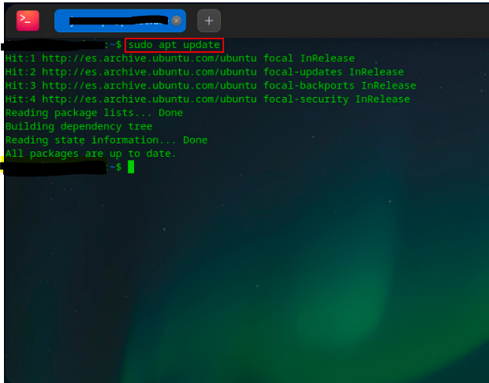
Paso 2: Procedemos a instalar, con permisos de superusuario, los paquetes necesarios mediante apt. Dichos paquetes son bind9 y bind9utils
sudo apt install bind9 bind9utils
Paso 3: El primer fichero que vamos a editar será /etc/bind/named.conf.local.
En él definiremos las zonas, directa e inversa, para el dominio midominio.local haciendo uso de la clausula zone. Cada bloque de zona incluirá de que tipo será la zona y el fichero en el que estarán definidas, para cada zona, las características, propiedades y entidades del dominio.
/etc/bind/named.conf.local
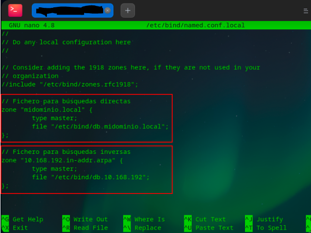
Paso 4: Una vez definidas las zonas, vamos a comprobar que la configuración sea correcta y no hayamos cometido errores en la sintaxis del fichero. Usaremos el comando named-checkconf.
Si tras lanzar el comando no nos devuelve nada, significará que no se han encontrado errores.
sudo named-checkconf /etc/bind/named.conf.local
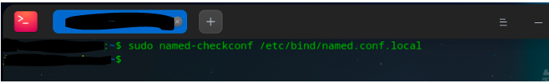
Paso 5: Ahora vamos a crear los ficheros de zona que hemos indicado anteriormente en la configuración.
Para su creación vamos a tomar como plantillas ficheros de zonas que se crean al instalar el paquete bind9 y los editaremos. Para la zona directa crearemos el fichero /etc/bind/db.midominio.local.
Paso 6: Una vez creado el fichero lo editaremos y cambiaremos/añadiremos el nombre del dominio y las entidades por las nuestras
También debemos cambiar la cláusula Serial cada vez que editemos nuestros ficheros de zona, esto es una forma de llevar un control de versiones. En mi caso le añado una numeración del tipo YYMMDDVV (año mes día versión).
/etc/bind/db.midominio.local
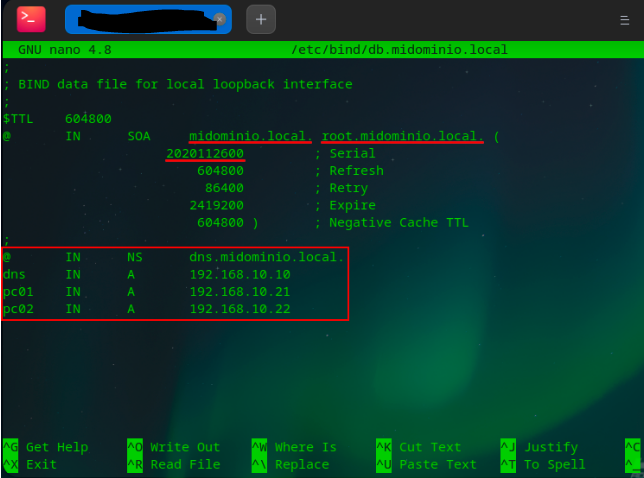
Paso 7: Como hemos hecho anteriormente para el fichero de zona directa, haremos lo mismo para crear el fichero de zona inversa.
sudo cp /etc/bind/db.127 /etc/bind/db.10.168.192
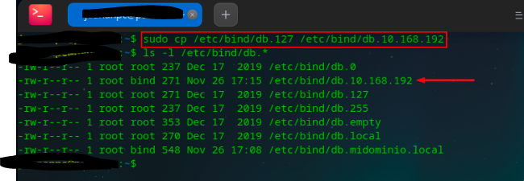
Paso 8: Una vez creado el fichero lo editaremos y cambiaremos/añadiremos el nombre del dominio y las entidades por las nuestras. No olvidemos modificar el Serial.
/etc/bind/db.10.168.192
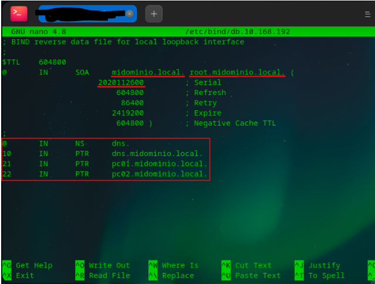
Paso 9: Lo siguiente que haremos será comprobar que la configuración de los ficheros de zonas la hemos realizado correctamente y no hayamos cometido errores en la sintaxis del fichero.
El comando que vamos a usar para comprobar los ficheros de zonas es named-checkzone seguido del nombre de la zona y del fichero en cuestión. Sabremos que todo está correctamente configurado si obtenemos un OK como respuesta.
Paso 10: El siguiente paso será editar el fichero /etc/bind/named.conf.options donde crearemos una lista de acceso para restringir quien puede realizar las consultas a nuestro servidor DNS e indicaremos un par de servidores forwarders donde delegará nuestro servidor DNS local cuando no pueda resolver alguna consulta.
/etc/bind/named.conf.options
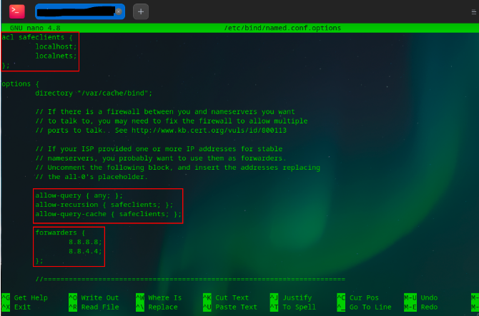
Paso 11: Antes de poner nuestro servicio en marcha vamos a modificar el fichero /etc/default/named donde especificaremos un argumento para el usuario bind.
Este usuario se crea automáticamente al realizar la instalación del servicio bind9. El argumento a indicar es -4, con él forzamos el uso de IPv4 siempre y así evitaremos mensajes de error de red inalcanzable por direccionamiento IPv6.
/etc/default/named
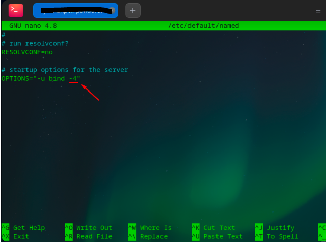
Paso 12: Después de esto ya tendremos configurado nuestro servidor DNS como queremos.
Solo queda reiniciar el servicio bind9 y comprobar que esté corriendo correctamente.
sudo service bind9 restard + sudo service bind9 status
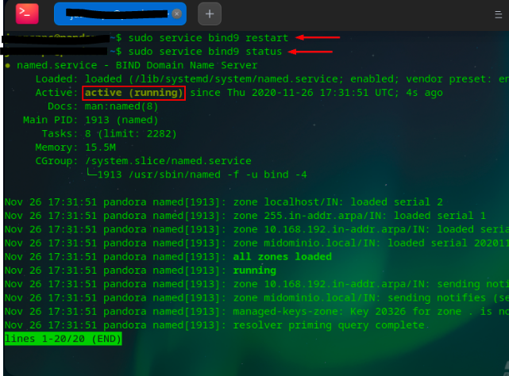
Paso 13: Seguidamente, editaremos la configuración de red de nuestro Ubuntu Server para indicarle que él mismo, es el servidor DNS que tendrá que consultar para la resolución de nombres.
Como ya sabemos, en Ubuntu Server 20.04 se hace uso de netplan.
/etc/netplan/00-installer-config.yaml
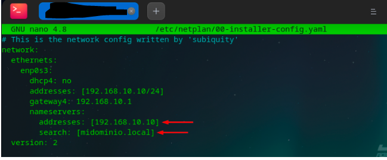
Paso 14: Una vez editada la configuración de red, lanzamos la instrucción sudo netplan apply para que los cambios surtan efecto.
sudo netplan apply
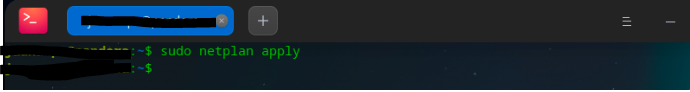
Paso 15: Vamos a realizar un par de pruebas con nslookup para comprobar si el servidor DNS está resolviendo correctamente los nombres y las IPs.
Paso 16: Si consultamos el fichero /etc/resolv.conf donde debería aparecer como nameserver la IP de nuestro servidor (localhost), veremos que nos aparece la dirección de loopback 127.0.0.53 la cual nosotros no hemos indicado en el fichero de configuración de la red. Además, si le hacemos un ls -l, podemos observar que se trata de un enlace simbólico a otro fichero de configuración.
cat /etc/resolv.conf
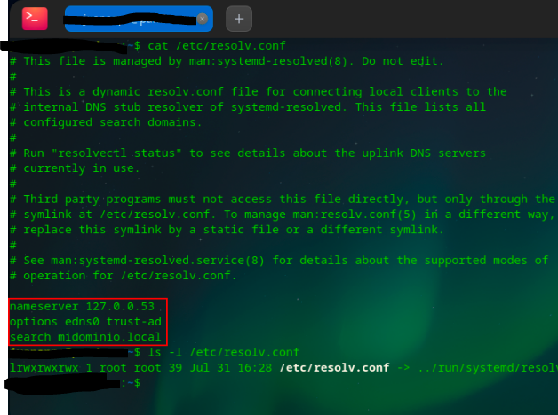
Paso 17: Para que todo funcione como antes de systemd y las aplicaciones consulten nuestro resolver directamente, debemos cambiar el enlace simbólico de /etc/resolv.conf y apuntarlo al siguiente fichero /run/systemd/resolve/resolv.conf
ls -l /etc/resolv.conf + sudo ln -sf /run/systemd/resolve/resolv.conf /etc/resolv.conf
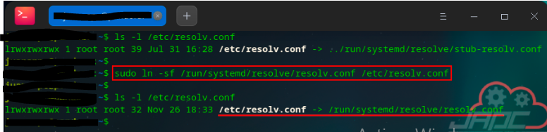
Paso 18: Una vez modificado el enlace simbólico vamos a comprobar el nuevo contenido de /etc/resolv.conf y veremos como, ahora si, aparece como nameserver la IP de nuestro servidor.
cat /etc/resolv.conf
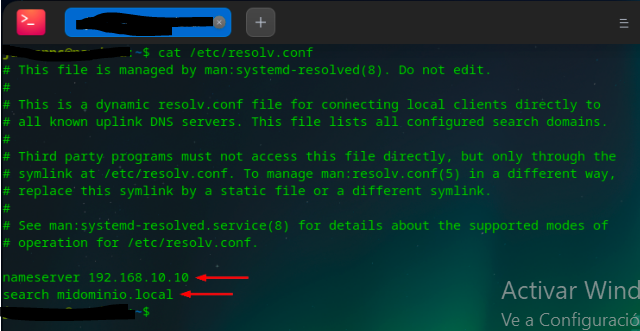
Paso 19: Y por último, ahora si que si, vamos a realizar las mismas pruebas con nslookup que realizamos anteriormente y comprobaremos el resultado de las consultas.